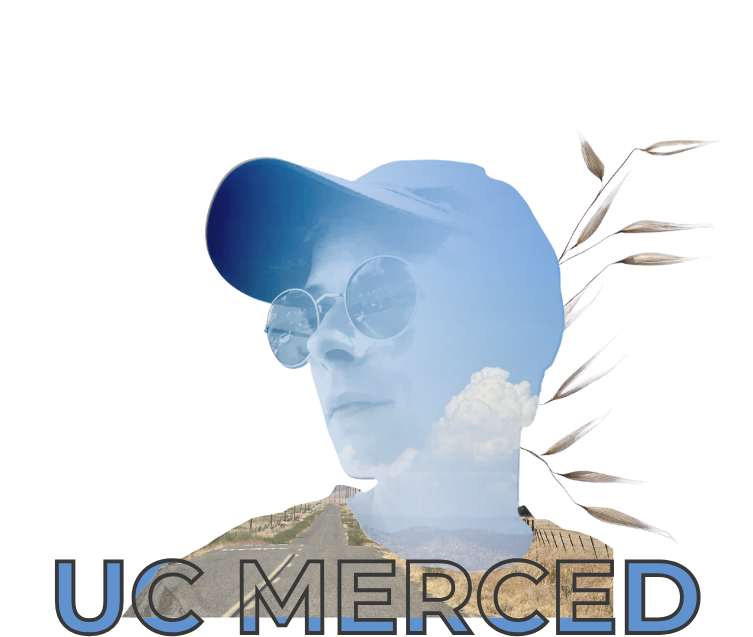
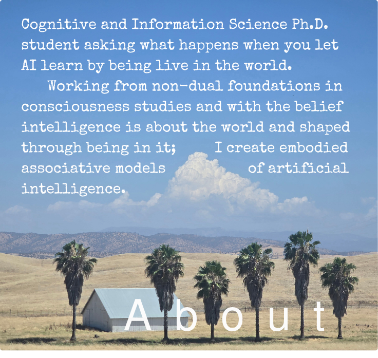
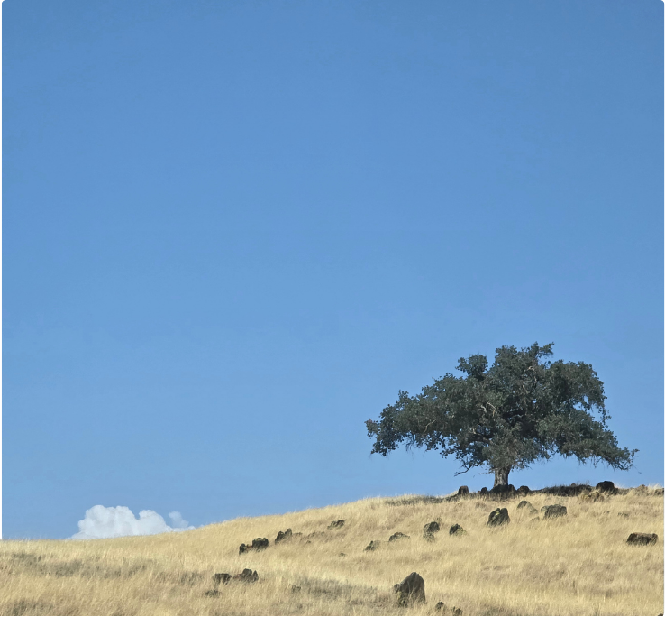
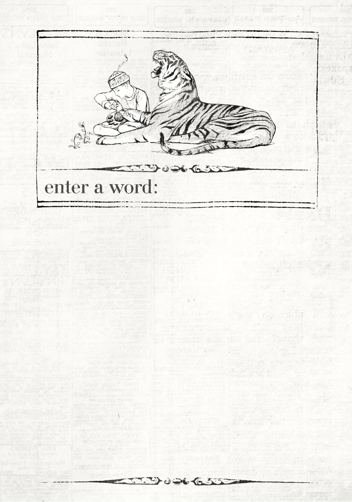

Virtual Embodied Dynamic Associations: an astrocyte-neuron coupled architecture for embodied, continuous learning.
GitHub repo →Dynamic Associative Networks: binary, boolean-structured associative networks developed with Dr. Anthony Beavers.
GitHub repo →A working dictionary of the terms and concepts this research is built from.
Enter the lexicon →
Intellectual Lineage:
Jeff Yoshimi | Ph.D. advisor
Christopher Kello | Ph.D. advisor
Tony Beavers | DAN creator, research mentor
Jonathan Shear | Lodestar
VCU B.A. Philosophy
CPH B.S. Computer Science
UCM Ph.D. student Cognitive &
Information Science
